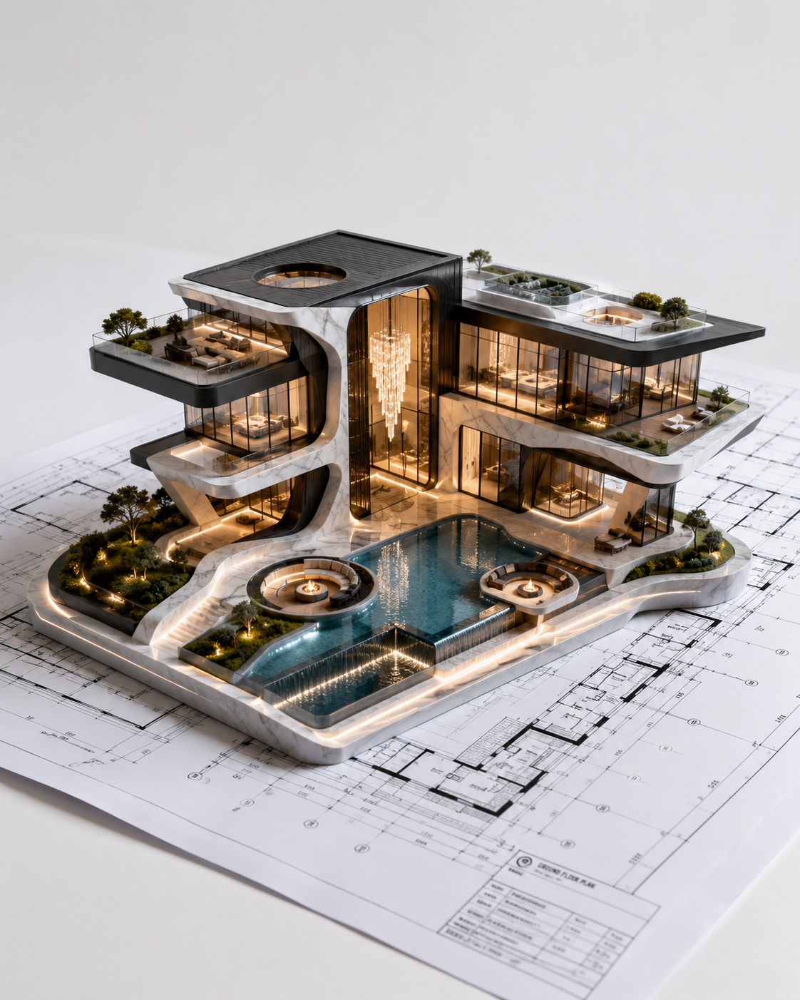

Listen & site
We begin with your brief, the land, and the constraints that matter — climate, craft, budget, and time. Nothing is assumed until the site has spoken.
Process / how a project moves
A clear sequence — never a template — so ambition stays buildable at every step.
We begin with your brief, the land, and the constraints that matter — climate, craft, budget, and time. Nothing is assumed until the site has spoken.
Light studies, material samples, and spatial sequences. We shape options until one feels inevitable — then we pressure-test it.
Joints, junctions, and assemblies are resolved in drawing and maquette. Structure, waterproofing, and craft are designed together — not bolted on later.
We stay on site with makers and engineers. Proportion is protected in the field — where a millimetre can decide whether a space breathes.
Documentation, care guides, and a return visit once the building has settled into use. The work is complete when it feels lived-in, not just new.

Every stage leaves a trail of evidence — sketches, models, and decisions you can hold.Ready when you are
Start with a conversation ↗